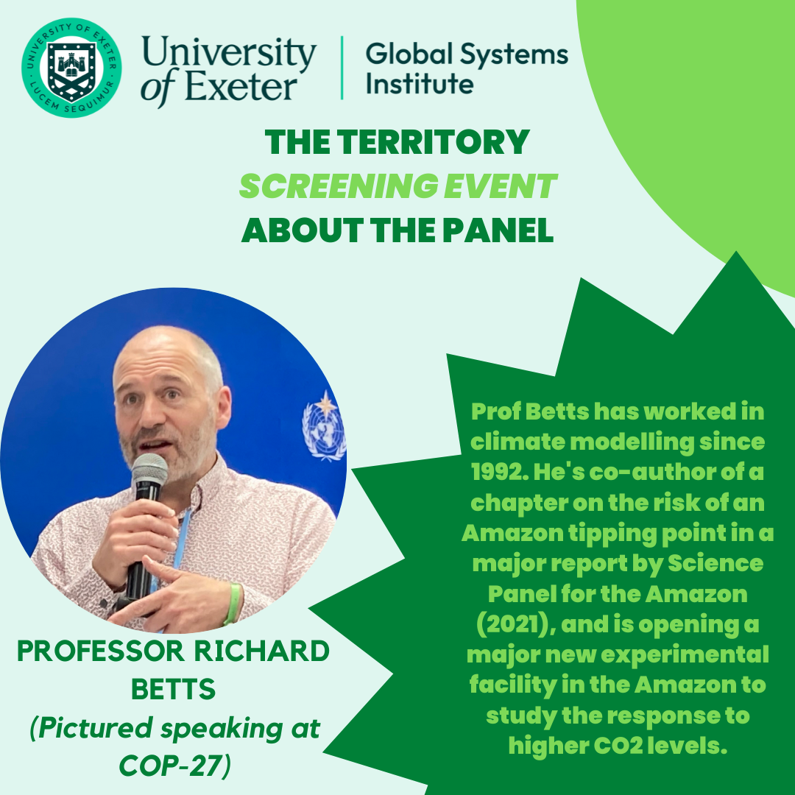

The Territory Film and Q&A Panel
a film from National Geographic, presented by the University of Exeter Global Systems Insitute in conjunction with the Exeter Pheonix (and I!)
The Territory is a film that seeps into your consciousness, lingering in the chill of your bones. The authenticity of any media can always be measured by how closely your memory of it, after first viewing, matches your impressions of it after the second. Rewatching it honed my impression of how the film was crafted, but my core feelings and memory of the story it at hand was unwavering, and indeed, perhaps even stronger.

It’s hard to find anyone who watches The Territory and comes away emotionally untouched. The cinematography flickers between delicate and brutal, reflecting the Amazon and its relationship to man in doing so. It always invites the viewer to place themselves unjudgementally in the shoes of whoever’s perspective we are gracefully occupying.
It felt easy to organise a panel for this event—the film laid out the threads of the issues at the heart of deforestation deceptively clearly. There are political and economic motivations—the deep recession of 2014 in Brazil was a strong factor in the election of populist Bolsonaro in 2018, who’s charisma and neighbour-next-door attitude won a victory reminiscent of Trump in 2016 in the United States.
There are the cultural motivations—farmers, who have been promised land rights by social and religious contract; tribe members, who have had a connection to their home and showcase these ties by the mere ease in which they pass through dense forest. There is, of course, the science behind it all, looming in the background, spelled out by one of the main characters, Bitate. The Amazon is the heart of the world, he says. No Amazon, no CO2 scrubbing, no liveable global climate.
I am so grateful to have heard from our panel members. Richard and Lucy laid out so clearly what’s at stake, in terms of the climate science. Lucy and her family’s personal experiences seeing the diminishing Amazon rainforest riveted the audience.
Malcolm reminded us of the fact that the story behind this is bigger than just one tribe, bigger than just Brazil: the Amazon spans many Latin and South American countries. The consequences to the people involved are so very real, not just because of losing land, but because standing up to human rights infringements is dangerous to one’s own personal safety when going up against conglomerates and governments.
Chendi did a stupendous job laying out the difficulties that lie in holding corporations and countries to account—and that there is a distinct difference between creating regulation, and what it takes to actually enforce it. Monitoring data is desperately needed in order to fill in the gaps for sustainable finance. Chendi also did a fantastic job of showcasing how complicated and complex these problems are—sustainable regulations in one country in the Global North can create unsustainable knock-on effects in the Global South.
The audience members also deserve heaps of accolade; they helped make this the community event that I hoped for. It was a shame the panel section couldn’t go on any longer, as we were just getting into very meaty audience questions. I look forward to organising future film events and welcome any feedback from attendees.